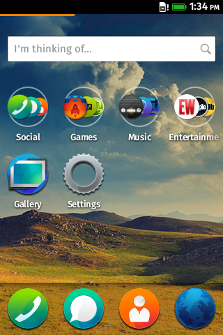

Designing and implementing advanced interactions in FFOS
DevConf Second Edition, 6th of November
Jose Manuel Cantera and Cristian Rodríguez
Introduction
Details about how to implement applications in FFOS that have sophisticated user interactions
The context
Web Browser (HTML, CSS, Javascript). Technology. Transitions, Animations, Events (Mouse, Touch)
Cases of Study
Homescreen panning and drag&drop
Homescreen Architecture Overview
Classes diagram
Homescreen panning
Functional requirements
- Icons will be placed in different pages (grid layout)
- Users will be able to navigate among different pages (55 FPS)
- Implement a drop shadow for icon apps

Dummy Approach
- This image represents where the pages are located when the current page is the second
Dummy Approach - Markup
- Huge wrapper containing all pages (orange line in chart)
- Page containers fitted to the screen resolution
- Unordered lists represent grid of icons
<section id="wrapper">
<div class="page">
<ul>
<li>Icon 1</li>
<li>Icon 2</li>
<!-- More icons... -->
</ul>
</div>
<!-- Rest of pages -->
</section>
Dummy Approach - Styles
#wrapper {
height: calc(100% - 7rem); /* 7rem is the dock height */
}
#wrapper .page {
width: 100%;
height: 100%;
display: inline-block;
}
- Drop shadows defined by means of the box-shadow property
#wrapper .page > ul > li .icon {
box-shadow: 1rem 1rem .5rem #888888;
}
Dummy Approach - Behavior
- Wrapper translated in X-axis (CSS3 Transformations)
- Listening for touchstart event in wrapper and for touchmove and touchend in window
switch (evt.type) {
case 'touchstart':
// Initialize starting position, deltaX,...
case 'touchmove':
// Calculate startX, deltaX, threshold to start panning,
// direction of the gesture,...
wrapper.style.MozTransform = 'translateX(' + deltaX + 'px)';
case 'touchend':
// Did the user click on an icon or was he panning?
}
Why it is not a good solution
Frame rate about 25-30 per second
- Continous reflows while the pages are being translated
- Several allocations while panning (tons of calculations)
- High consume of memory (all pages in memory)
- Some CSS properties are not completely optimized in Gecko
Final implementation
- At the beginning the first page is translated to 0 and the others to 100% (right). This image represents where the pages are located when the current page is the second.
Avoid reflows!
- DOM Elements bigger than screen WILL be repainted while translating or scaling
- The performance translating three pages at the same time is better than translating the whole wrapper which is bigger than the screen. Why? Three containers better than one, really? :(
-
Gecko applies cache to DOM elements during translations avoiding continuous reflows
-
Please don't try to change styles while transformations in order to achieve a good frame rate
-
Take a look to requestAnimationFrame
Avoid allocations in critical code I
- Spend your time re-thinking your code
-
Dedicated handlers for panning depending on relevants pages
based on the direction of the inputs
-
Source code
-
If your requirements allow you prevent the default behavior for touchmove events, you can save 16ms
-
Gaia's homescreen cannot do this because it needs to listen for contexmenu events (long press)
Avoid allocations in critical code II
Pay attention to memory consumption
- Just previous, next and current pages are displayed
- Rest of pages are not consuming memory
display: none
Don't listen for all events everytime/everywhere:
- Start listening for touchstart in the parent of the pages
- Received this one, you can add handlers for touchmove and touchend (window object). After that, remove the previous one
- When users release the finger, you can remove those handlers and add again the listener for touchstart
Becareful with some CSS properties
- Sadly not all CSS properties are optimized in Gecko
- What properties you should avoid translating or scaling elements?
- Opacity (elements with opacity are harder to translate)
- Box-shadows and text-shadows
- SVG masks and filters
-
As you know, one requeriment was to apply a drop shadow to app icons. We had to paint our
icons by means of HTMLCanvasElement. Once they are created, images are added to the DOM with blobs
generated from them
Hardware restrictions vs Imagination
- Improve the experience predicting the movement based on an extra motion (velocity)
- Not covered by this presentation
Homescreen drag&drop
Functional requirements
- Users is able to select an icon by long pressing it and drag it to a different location
- Icons will be rearranged smoothly
- Icons will be zoomed-in when users press and hold them
- Icons will be zoomed-out when users release them
Dummy Approach
Dummy Approach - How it works
The idea is based on two pillars
- Hide the real draggable icon and create a clone from it which will be scaled and translated
- Actually the scaled icon is not consuming touch/mouse events so the icon under the finger is known thanks to next trick
pointer-events: none
The re-arrange will be done between the hidden and overlapped icons
Node.insertBefore
Why it is not a good solution
Frame rate about 15-20 per second
- Continous reflows while the icons are being re-arranged
- No smooth solution because icons don't dance but they are painted violentry
"Although the hidden and cloned icons was a good approach"
Final implementation - Re-arrange I
- Shallow copy of the children icon list (children list is alive!)
var icons = this.olist.children;
var sIcons = Array.prototype.slice.call(icons, 0, icons.length);
Calculate what icons are between the hidden and overlapped icons
Apply translations to them to reach the new location (upward, forward,...). When the transition is finished (transitionend event)
- Save new locations in dataset attribute for each icon to be ready for consecutive translations
Final implementation - Re-arrange II
-
Set up the new order in our list by means of splice method
- The dragdrop library is decoupled from grid component so how to know when the grid is ready to apply next animation?
document.dispatchEvent(new CustomEvent('ongridready'));
document.addEventListener('ongridready', function onGridReady() {
// Re-arrange transitions finished
});
Don't forget to remove listeners for transitionend, animationend, etc... in order no to consume more memory
What's coming
Pointer events
Conclusions